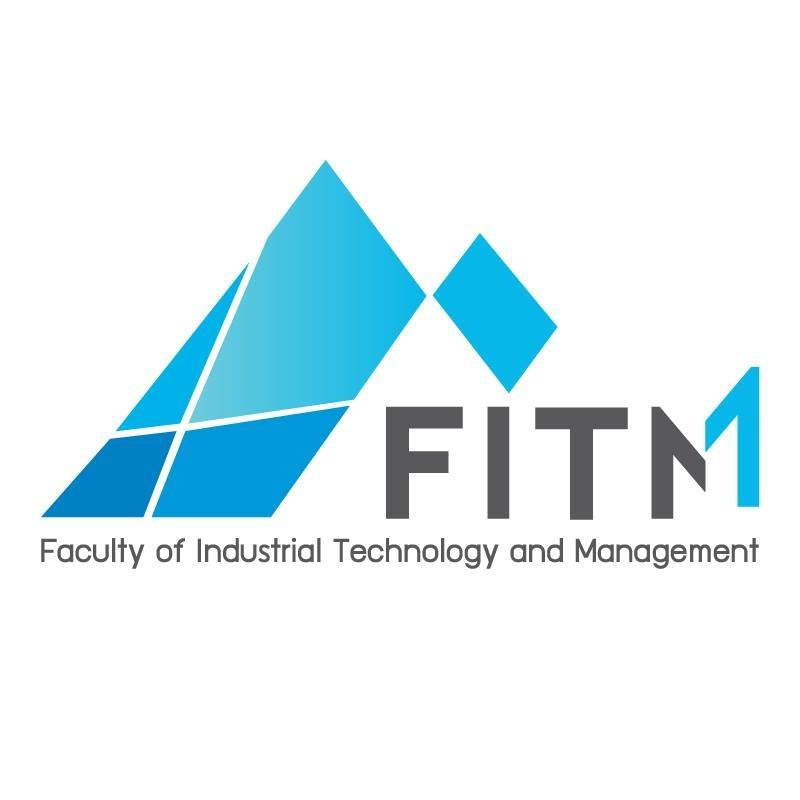

ประวัติความเป็นมา

มหาวิทยาลัยเทคโนโลยีพระจอมเกล้าพระนครเหนือ วิทยาเขตปราจีนบุรี สาขาวิชาเทคโนโลยีสารสนเทศเพื่ออุตสาหกรรม
ปี พ.ศ.2537 โครงการคณะอุตสาหกรรมศาสตร์ได้รับการบรรจุไว้ในแผนพัฒนาการศึกษาระดับอุดมศึกษา โครงการคณะอุตสาหกรรมศาสตร์ได้รับการบรรจุไว้ในแผนพัฒนาการศึกษาระดับอุดมศึกษา พ.ศ. 2535 - 2539 ตามนโยบายการขยายโอกาสการศึกษาสู่ส่วนภูมิภาคของสถาบัน ปี พ.ศ.2538 จัดตั้งสาขาวิชาเทคโนโลยีสารสนเทศเพื่ออุตสาหกรรม จัดตั้งสาขาวิชาเทคโนโลยีสารสนเทศเพื่ออุตสาหกรรม จัดการเรียนการสอนที่อาคารอเนกประสงค์ สถาบันเทคโนโลยีพระจอมเกล้าพระนครเหนือ กรุงเทพมหานคร จัดตั้ง สถาบันเทคโนโลยีพระจอมเกล้าพระนครเหนือ ปราจีนบุรี โดยมีคณะเทคโนโลยีและการจัดการอุตสาหกรรมเป็นคณะแรกที่ สจพ.ปราจีนบุรี ปี พ.ศ.2539 คณะเทคโนโลยีและการจัดการอุตสาหกรรม ได้รับการจัดตั้งอย่างเป็นทางการ โดยประกาศในราชกิจจานุเบกษา คณะเทคโนโลยีและการจัดการอุตสาหกรรม ได้รับการจัดตั้งอย่างเป็นทางการ โดยประกาศในราชกิจจานุเบกษา เมื่อวันที่ 6 สิงหาคม 2539 ผศ.วรวิทย์ จตุรพาณิชย์ ดำรงตำแหน่งคณบดีคณะเทคโนโลยีและการจัดการอุตสาหกรรม ตั้งแต่ พ.ศ.2539 - พ.ศ.2547 ปี พ.ศ.2540 จัดการศึกษาครั้งแรกที่จังหวัดปราจีนบุรี จัดการศึกษาครั้งแรกที่จังหวัดปราจีนบุรี ที่วิทยาลัยสารพัดช่างปราจีนบุรี โดยสาขาวิชาเทคโนโลยีสารสนเทศเพื่ออุตสาหกรรม ปี พ.ศ.2541 อาคารหลังแรกของ สจพ.ปราจีนบุรี แล้วเสร็จ อาคารหลังแรกของ สจพ.ปราจีนบุรี แล้วเสร็จ คือ อาคารอเนกประสงค์ และใช้เป็นสถานที่จัดการเรียนการสอน จัดตั้งสาขาวิชาการจัดการอุตสาหกรรม และ สาขาวิชาการบริหารงาน ก่อสร้าง ปี พ.ศ.2542 อาคารคณะเทคโนโลยีและการจัดการอุตสาหกรรม แล้วเสร็จ อาคารคณะเทคโนโลยีและการจัดการอุตสาหกรรม แล้วเสร็จ และคณะได้ย้ายที่ทำการและจัดการเรียนการสอนที่ สจพ.ปราจีนบุรี อย่างเต็มรูปแบบ จัดตั้งสาขาวิชาเทคโนโลยีเครื่องจักรกลเกษตร ปี พ.ศ. 2546 จัดตั้งสาขาวิชาการจัดการอุตสาหกรรมการท่องเที่ยว และการโรงแรม จัดตั้งสาขาวิชาการจัดการอุตสาหกรรมการท่องเที่ยว และการโรงแรม (ปัจจุบันสังกัดคณะบริหารธุรกิจ และอุตสาหกรรมบริการ) ปี พ.ศ. 2547 ผศ.พีระศักดิ์ เสรีกุล ผศ.พีระศักดิ์ เสรีกุล ดำรงตำแหน่งคณบดีคณะเทคโนโลยีและการจัดการอุตสาหกรรม ตั้งแต่ปี พ.ศ. 2547-2555 ปรับรูปแบบโครงสร้างองค์กรจากสาขาวิชาเป็นภาควิชา ปี พ.ศ. 2550 เปลี่ยนสถานภาพ สถาบันเทคโนโลยีพระจอมเกล้าพระนครเหนือ เปลี่ยนสถานภาพเป็น “มหาวิทยาลัยเทคโนโลยีพระจอมเกล้าพระนครเหนือ” ปี พ.ศ. 2553 โรงแรมวิลล่าวิชชาลัย ใช้เป็นอาคารฝึกปฏิบัติงานของนักศึกษาและให้บริการ โรงแรมวิลล่าวิชชาลัย ใช้เป็นอาคารฝึกปฏิบัติงานของนักศึกษาและให้บริการ เป็นที่พักรับรองสำหรับบุคคลทั่วไป (ปัจจุบันอยู่ภายใต้การบริหารงานของ คณะบริหารธุรกิจและอุตสาหกรรมบริการ) ปี พ.ศ. 2555 รศ.ดร.อนิราช มิ่งขวัญ ดำรงตำแหน่งคณบดี รศ.ดร.อนิราช มิ่งขวัญ ดำรงตำแหน่งคณบดีคณะเทคโนโลยีและการจัดการอุตสาหกรรม ตั้งแต่ปี พ.ศ.2555-2563 ปี พ.ศ. 2556 มีตราสัญลักษณ์ (logo) มีตราสัญลักษณ์ (logo) ของคณะเทคโนโลยี และการจัดการอุตสาหกรรมอย่างเป็นทางการ และใช้มาจนปัจจุบัน ปี พ.ศ. 2559 คณะเทคโนโลยีและการจัดการอุตสาหกรรม ประกอบด้วย 5 ส่วนงาน คือ ภาควิชาเทคโนโลยีสารสนเทศ ภาควิชาการจัดการอุตสาหกรรม ภาควิชาการออกแบบและบริหารงานก่อสร้าง ภาควิชาวิศวกรรมเกษตรเพื่ออุตสาหกรรม สำนักงานคณบดี ปี พ.ศ. 2563 ผศ.ดร.กฤษฎากร บุดดาจันทร์ ดำรงตำแหน่งคณบดี ผศ.ดร.กฤษฎากร บุดดาจันทร์ ดำรงตำแหน่งคณบดี คณะเทคโนโลยีและการจัดการอุตสาหกรรม ตั้งแต่ปี พ.ศ.2563 จนถึงปัจจุบัน